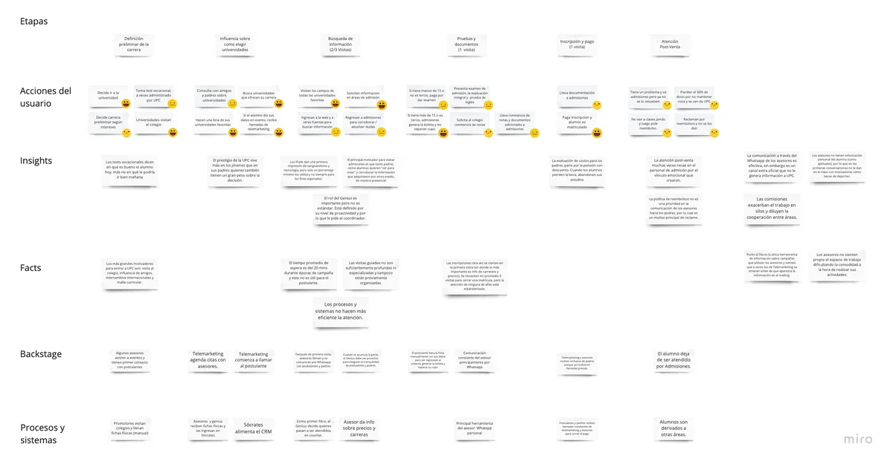
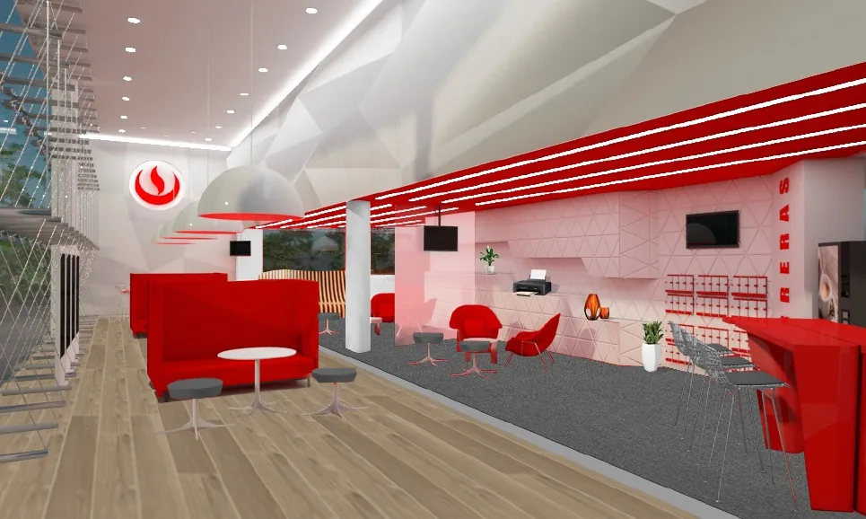
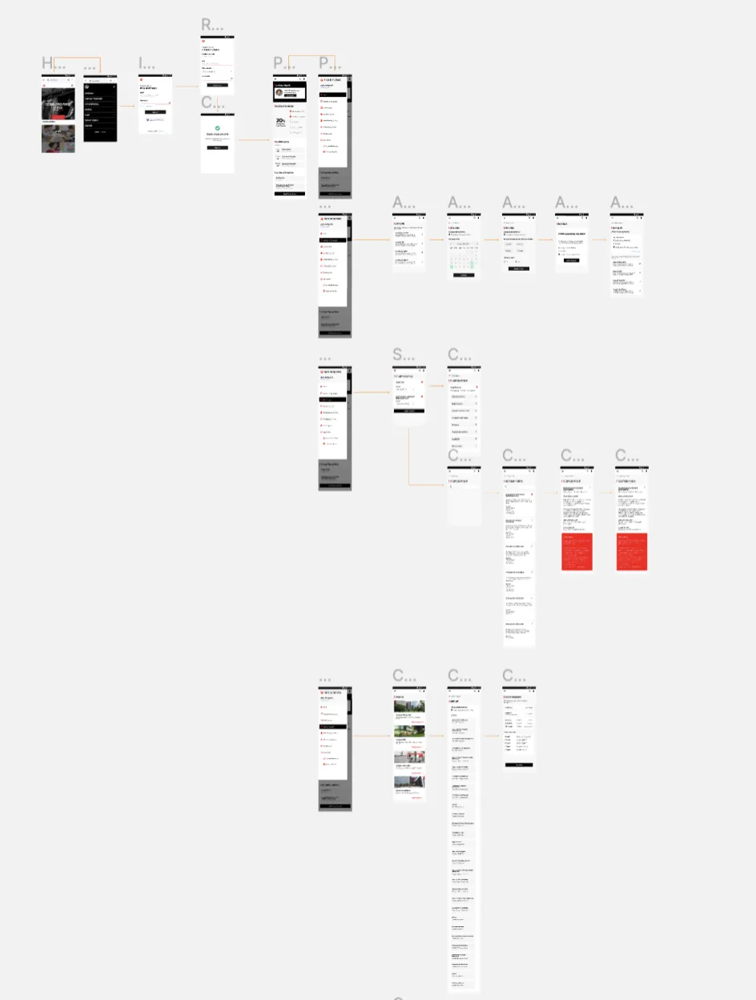
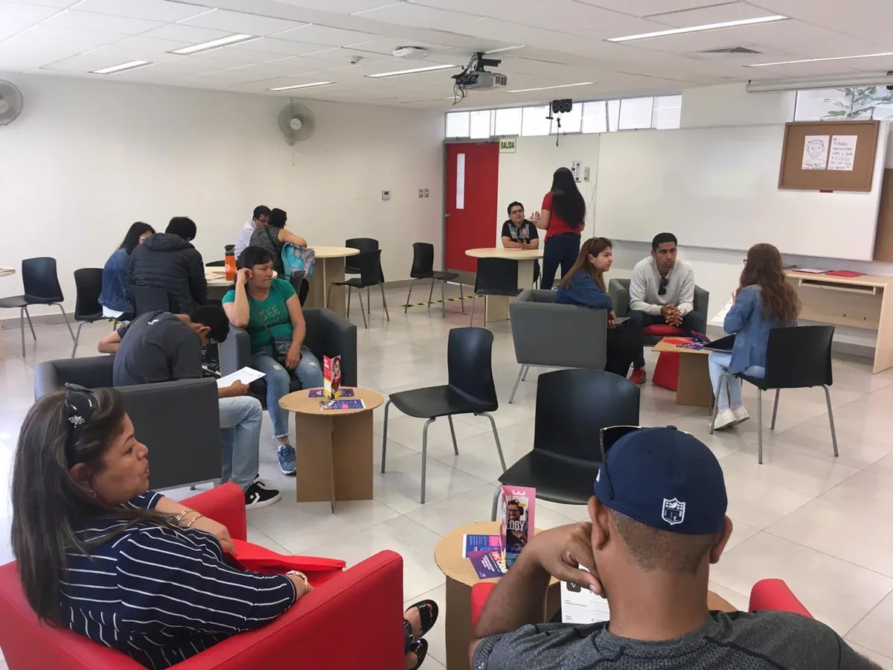
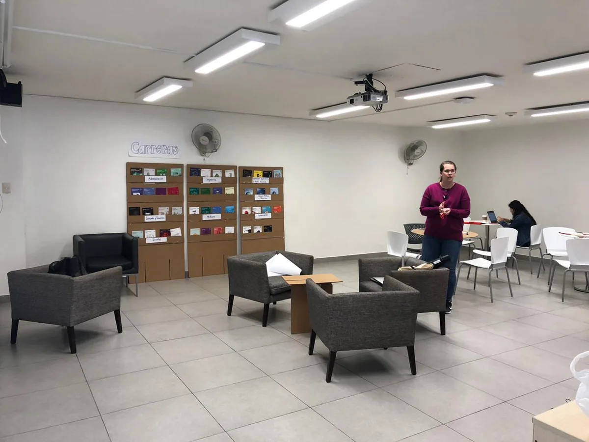
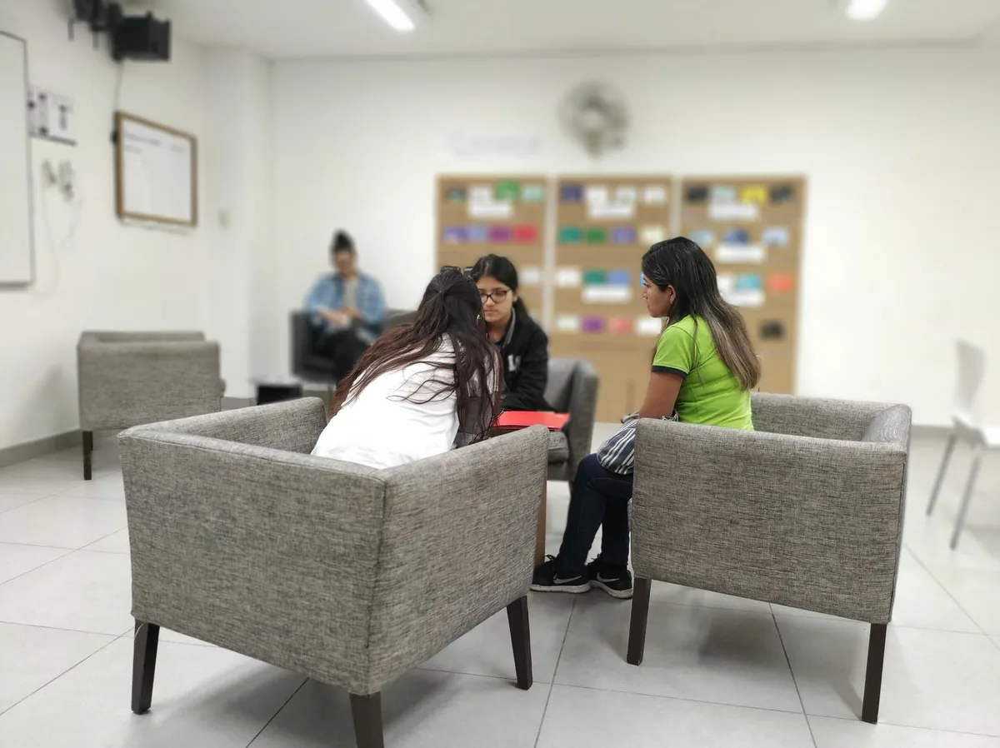

Contexto
La Universidad Peruana de Ciencias Aplicadas (UPC) buscaba rediseñar su experiencia de atención para postulantes y padres de familia en sus sedes físicas. Nuestro objetivo desde Continuum fue mejorar tanto el proceso como el espacio físico, proponiendo soluciones omnicanal que alinearan la experiencia digital y presencial durante el proceso de admisión.
El contexto organizacional era complejo: Al momento del kick-off, descubrimos que existían 3 proyectos similares corriendo en paralelo dentro de la universidad, cada uno trabajando de forma aislada (en silos) sobre la digitalización de inscripción. Nuestro equipo logró desarrollar hallazgos valiosos y propuestas concretas que se diferenciaban por un enfoque integral: no solo diseñamos la experiencia digital, sino también el rediseño completo del espacio físico de admisiones.
Parte de nuestras soluciones se implementaron directamente en las sedes físicas, mientras que otros insumos fueron absorbidos por un proyecto distinto que tenía mayor peso político dentro de la institución. Aun así, el impacto de nuestra propuesta fue significativo y validado con testeos reales en condiciones de alta afluencia.
El Desafío
Asegurar que postulantes y padres de familia tengan una buena experiencia en el proceso de admisión, que los conduzca a escoger y permanecer en la UPC. Enfocarnos en un solo canal haría que pensemos en una solución en silo. Es necesario ver el servicio como una sola gran experiencia omnicanal.
Mi Rol en el Proyecto
Como Service Designer en Continuum, participé en todas las etapas del proyecto: desde la investigación inicial, ideación, prototipado y testeo de soluciones, hasta la entrega final.
Composición del equipo:
- Lead UX Designer
- UX/UI Designer
- Yo (Service Designer)
- 1 Arquitecta
Mi enfoque estuvo en:
- Identificar fricciones clave en la experiencia actual de admisión
- Diseñar una solución integral que integrara canales digitales, espacios físicos y equipos de atención
- Facilitar sesiones de co-creación con el equipo de UPC
- Coordinar y participar en pruebas reales en 2 sedes con ~30 usuarios
- Acompañar la traducción de insights en entregables prácticos para implementación
- Mapear el journey completo del postulante desde el primer contacto hasta la matrícula
- Diseñar el rol del "Genius" como orquestador de la experiencia
Enfoque y Proceso
Implementamos un proceso de diseño centrado en el usuario con foco en la omnicanalidad, asegurando que cada punto de contacto estuviera integrado y respaldado por una misma base de información.
1. Discovery & Mapeo de Experiencia Actual
Investigación profunda del contexto actual:
- Investigación en terreno: observación directa y entrevistas a postulantes, padres y personal de admisión
- Mapeo del journey actual del postulante, desde su primer contacto hasta el cierre del proceso
- Identificación de fricciones: duplicidad de información, baja visibilidad de la oferta académica, entornos físicos poco cómodos o poco intuitivos
- Descubrimiento de 3 proyectos paralelos trabajando en silos dentro de la universidad
2. Ideación y Conceptualización
Co-creación de la visión omnicanal:
- Facilitación de workshops con el equipo UPC para imaginar una experiencia ideal
- Generación de conceptos de mejora: Portal del postulante (plataforma digital centralizada), Rediseño físico de sedes (zonas de bienvenida, visualización de carreras, espacios sin barreras), Rol "Genius" (orquestador de toda la experiencia), Sistema de turnos (ticketera en iPad), Simulador de costos (herramienta digital interactiva)
3. Prototipado y Testeo Real
Validación con usuarios reales en contexto real:
- Testeo físico en 2 sedes (Monterrico + otra)
- ~30 usuarios totales (padres y postulantes)
- 4 horas por sede en día de alta afluencia
- Evaluación de elementos digitales, mobiliario, flujo de atención y señalización
- Testeamos un servicio completo con atención real, no solo prototipos
- Identificación de aspectos que aumentaban percepción de cercanía: Eliminación del counter como barrera, Mobiliario cómodo tipo sala de estar, Uso compartido de pantallas (iPad/laptops) entre asesor y postulante, Información visible y accesible desde la entrada
4. Entregables Finales y Roadmap
Documentación completa para implementación:
- Documentación completa del nuevo journey de admisión
- Recomendaciones para rediseño de 4 sedes físicas (Monterrico, San Miguel, San Isidro, Villa)
- Prototipos funcionales: simulador de costos, sistema de turnos
- Guías para implementación por fases
- Planos y layouts de cada sede con especificaciones de mobiliario
La Gestión del Proyecto
Cuatro meses, cuatro sedes y un cliente que tenía que sentarse en la mesa. La parte de diseño está más arriba; esto es lo que la sostuvo: un alcance acordado por escrito antes de investigar nada, fases con duración cerrada, un cronograma que el cliente veía, y una ampliación a mitad de camino que no descarriló el proyecto porque se trató como lo que era.
1. El Scope Canvas, antes de investigar nada
El proyecto no arrancó investigando: arrancó con un taller de Scope Canvas con los stakeholders en la primera semana. Ahí se alinearon los objetivos, se acordaron las métricas con las que se juzgaría el resultado y se levantó todo el conocimiento que ya existía dentro de la universidad. El canvas quedó en físico, visible durante el resto del proyecto. Es el paso que evita que en la semana ocho alguien pregunte qué estábamos midiendo.
2. Cuatro fases, cada una con duración y entregables cerrados
La propuesta no vendía horas sino fases, y cada fase comprometía por escrito qué se entregaba y en cuánto tiempo:
- Discovery — 5 semanas. Scope Canvas, presentación de hallazgos, user personas, y Customer Journey Map y Service Blueprint del estado actual.
- Ideación y prueba de concepto — 2 semanas. Listado de iniciativas priorizadas, diagrama de flujo, esquema de funcionamiento y conceptos validados.
- Prototipado y testeo — 3 semanas. Registro de los testeos, resultados y aprendizajes por sprint.
- Roadmap — 1 semana. Nuevo Journey Map, nuevo Service Blueprint y roadmap de tareas repartidas entre frontstage y backstage.
3. Un cronograma compartido, con el cliente dentro
El cronograma se llevaba semana a semana en una hoja compartida con la universidad, y cada actividad decía quién la ejecutaba: la consultora sola, o la consultora y el cliente juntos. Esa columna es lo que convierte un taller de co-creación en un compromiso de agenda en lugar de una buena intención. Los hitos conjuntos —el kickoff, la presentación de hallazgos, los talleres de ideación, el Service Blueprint— quedaban reservados con semanas de antelación.
4. La ampliación de alcance, tratada como lo que era
A mitad del proyecto el cliente quiso llevar el prototipo del espacio físico más lejos: planos, vistas 3D y documentación a nivel de anteproyecto. No se absorbió dentro del alcance existente. Se documentó como una adenda, con sus propios entregables, su propio plazo y su propio hito de facturación. Y, sobre todo, con una lista explícita de lo que no incluía: planos de especialidades, expediente técnico a nivel de proyecto, supervisión de obra, trámites municipales. Escribir esa lista es lo que impide que un alcance ampliado se convierta en un alcance infinito.
5. Facturación atada a hitos, no al calendario
La facturación no era una fecha suelta a fin de mes: dos armadas iguales atadas a hitos del proyecto —una al arrancar, otra a mitad—, cada una con su orden de compra previa, su fecha de emisión y su fecha de pago prevista, en un calendario que el cliente también veía. La ampliación de alcance tuvo su propio hito, con su propia orden de compra y su propia fecha, en lugar de colarse en las anteriores. Tener eso escrito de antemano ahorra la conversación incómoda de después.
6. Medir con un instrumento estándar
El prototipo digital se evaluó con System Usability Scale, el cuestionario estándar de diez afirmaciones, aplicado al final de cada sesión de testeo. La ventaja de usar un instrumento reconocido en lugar de preguntas propias es que el resultado se puede comparar: entre rondas de testeo, entre versiones del prototipo y contra referencias del sector. Convierte «a los usuarios les gustó» en un número sobre el que se puede discutir.
7. Cerrar el proyecto, y que el cliente pida más
El proyecto no se dejó morir: se cerró con una presentación formal de agenda fija —review, resultados de los testeos, nuevo journey, espacio físico, y entregables con roadmap de implementación—. Y el cronograma final tiene una fase que la propuesta original no contemplaba: acompañamiento en la implementación. Sumada a la ampliación del espacio físico, son dos extensiones de alcance pedidas por el cliente sobre un encargo que ya tenía fecha de fin. Acabó siendo más grande de lo que se vendió, y aun así cerró.
Hallazgos Clave del Testeo
🔗 La omnicanalidad es clave
Todos los puntos de contacto deben complementarse y estar soportados por una sola base de información consolidada. Los canales no pueden funcionar de forma aislada: la experiencia digital debe reflejar y potenciar la experiencia física, y viceversa.
👨👩👧 Postulantes vs Padres: necesidades distintas
Los postulantes captan rápidamente el uso y valor de la plataforma digital. Los padres necesitan complementarlo con contacto humano. Esto confirmó que la solución debía ser híbrida, no solo digital.
📅 Momentos clave estandarizados por canal
Es importante definir qué momentos deben ser presenciales y cuáles digitales: Presencial: Tomar visitas guiadas, tomar examen de admisión. Digital: Agendar visitas, agendar y pagar examen, ver resultados.
🔗 Registro temprano = vínculo sólido
El registro en la plataforma del postulante debe ser lo más temprano posible pues es una manera de solidificar su vínculo con la universidad hasta que decida incorporarse.
🪑 Mesas redondas y mobiliario cómodo generan cercanía
La atención en mesas redondas y los muebles cómodos, generan cercanía entre el postulante y el asesor. Este ambiente también hace que la espera sea más placentera.
💻 iPads y laptops compartidas mejoran transparencia
Es necesario que los sistemas de atención estén disponibles para laptops y iPads ya que estos mejoran la interacción entre el postulante y el asesor pues ambos ven la misma información y esta se siente más transparente.
🎯 El rol del "Genius" como orquestador
El Genius cumple un rol importante y debe ser quien orqueste toda la escena. Por eso es importante armarlo con las herramientas e información necesarias. Este rol da la bienvenida, guía y resuelve dudas iniciales sin barrera física.
📚 Visibilidad de la oferta completa desde la entrada
El mostrar la oferta completa de carreras desde la entrada es importante para quienes van a pedir informes. Los usuarios se sorprendían positivamente al descubrir carreras que no sabían que existían en la universidad.
Del Problema a la Solución
❌ Problemáticas del Espacio Actual
- No se encuentra rápidamente el área de admisión al ingresar
- Ingreso genera sensación de asfixia por disposición de muebles
- Módulos inapropiados con espacio de atención muy reducido
- Computadora tapa la visibilidad al cliente
- Espacios con poca acústica
- Tablets de poco uso en implementación actual
- Iluminación poco apropiada
✅ Descubrimientos en Testeo del Prototipo
- Pared con folletería de todas las carreras sorprendió positivamente
- Los clientes se sentían mucho más cómodos en salas pequeñas
- Trato más amistoso sin barrera del counter
- Asesor acercándose al cliente generaba mayor comodidad
- Asesores tenían sensación más positiva al moverse vs estar detrás del counter
- Mesas pequeñas con altura apropiada creaban continuidad visual
Resultados
Impactos específicos:
- Digitalización de inscripción implementada (flujo casi idéntico a nuestra propuesta)
- Cambios en espacio físico implementados en sedes basados en nuestro informe
- Herramientas digitales propuestas (simulador de costos, sistema de turnos) validadas con usuarios reales
- Eliminación progresiva de counters como barreras físicas
- Implementación de zonas de visualización de carreras desde la entrada
- Información generada alimentó decisiones estratégicas a pesar de la fragmentación entre proyectos
- Se entregó una visión clara y centrada en el usuario para la admisión universitaria, con impacto parcial pero sostenible
Aprendizajes Clave
Diseñar en contextos con estructuras fragmentadas
Descubrir 3 proyectos paralelos trabajando en silos fue un desafío diplomático además de metodológico. Aprendí que en organizaciones complejas, el diseño de servicios debe ser aún más riguroso, empático y diplomático. No basta con tener la mejor solución: hay que navegar dinámicas políticas y tensiones de poder.
Testear en contexto real es invaluable
Probar durante 4 horas en cada sede, en días de alta afluencia, con usuarios reales (no reclutados), nos dio insights que ningún laboratorio de usabilidad podría replicar. Ver cómo los asesores se movían entre las mesas, cómo los padres reaccionaban a la falta de counter, cómo los postulantes descubrían carreras en la pared... eso solo pasa en contexto real.
La omnicanalidad no es opcional
Los jóvenes prefieren control digital, los padres valoran contacto humano. La experiencia física debe ser parte del servicio, no solo un soporte. Los espacios deben reflejar confianza, transparencia y orden visual. Ningún canal puede funcionar aislado.
Reflexiones
Diseñar es también navegar realidades organizacionales complejas.
Este proyecto fue un reto político y operativo, pero también una oportunidad para aprender a sostener la visión del usuario en medio de tensiones de poder y prioridades institucionales. Ver que parte de nuestro diseño físico fue implementado, y que el flujo digital se adoptó casi intacto (aunque con otra visualización), fue la confirmación de que cuando diseñamos con rigor y evidencia real, el valor se impone.
También aprendí que a veces los mejores proyectos no son los que se implementan al 100%, sino los que logran cambiar conversaciones, influir en decisiones y demostrar que otra forma de hacer las cosas es posible. Incluso cuando nuestros entregables fueron "absorbidos" por otros proyectos con más peso político, el hecho de que usaran nuestros insights y flujos es una victoria del diseño centrado en el usuario.
Recursos Visuales
Service Blueprint del Proceso de Admisión previo al proyecto
Mapeo completo de la experiencia, desde el primer contacto hasta la matrícula.

Blueprint completo del proceso de admisión
Rediseño de Espacios Físicos
Propuestas de layout para las sedes principales de UPC.

Rediseño Sede Monterrico
Portal del Postulante - Prototipos
Plataforma digital donde postulantes y padres tienen control total de su proceso.

Portal del postulante (no puedo mostrar algo más específico por el NDA)
Testeos Reales en Sedes
Fotografías de los testeos con usuarios reales en contexto de alta afluencia.

Testeo con postulantes y padres

Validación de mobiliario y espacios

Testeo del rol "Genius"
Recursos Externos
Caso publicado por Continuum
Ver caso en Continuum